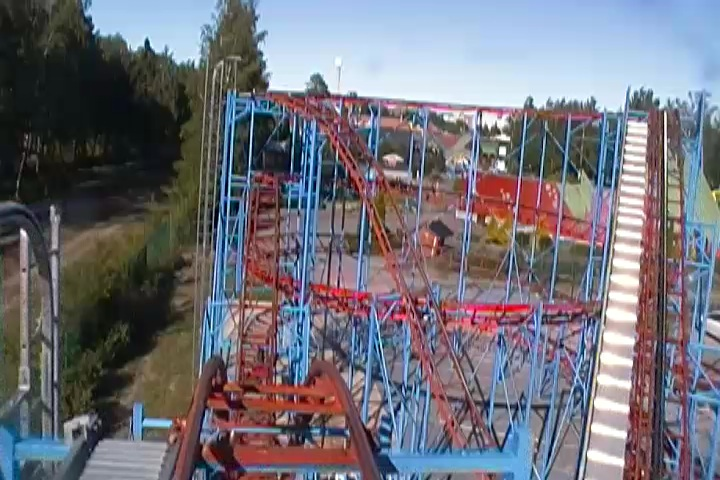
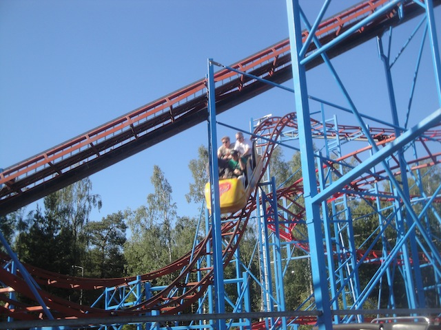
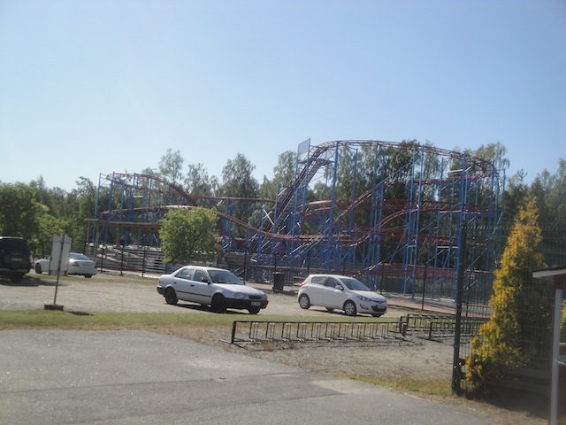

| |
Cyclon Review

For today's review, we are going back in time to Wasalandia to review Cyclon. The park's crappy Galaxi-like coaster. So let's just hop in the cars, pull down the lap bar, and away we go. You slowly roll around a turn before you begin to climb the lifthill. This lifthill seems kind of...sketchy. Yeah, that's right. It makes this weird sound. I wouldn't think twice about it if it wasn't for the fact that we just paid several hundred euros to ride a roller coaster that hasn't been ran in who knows how long. After you climb up the lifthill, you go through another slow turn. Then you head down the first drop. Its just a fun first drop, but nothing special. We then rise up a hill before we roll through another turn. It'd be nothing special, but on a coaster that looks incredibly flimsy and hasn't been tested, it keeps you on your toes. We move onto a small drop. Wee. We then rise up and head into an Italian Helix of Death. And considering how you're worried that this coaster might just completely collapse, it may literally be a helix of death (we'll be fine). We rise up a little hill before going through another turnaround. And hey, we have headchoppers. Please let the...they will. We then head down a small drop and gain a little speed. Crap!! We rise up and head into another turnaround into the brake run. So yeah. It's no big deal that Wasalandia closed and that this no longer exists. I got the credit. I don't care about this. But wait. Where's the tombstone? Actually, I just learned writing this review that they actually saved Cyclon. Cyclon wound up going to another park in Finland called Nokkakivi Park. I really don't care about this park. I have the only credit there. I'd be shocked if anything else at the park was of interest to me, and I'm not going to do the research to find out. But hey. If you were upset that you couldn't get this credit because Wasalandia closed, well, you can still snag this credit.
4/10
Location: Fantasiland
Cyclon opened at Freizeitpark Familienland in 2000
It was moved to Wasalandia in 2013
It was moved to Nokkakivi Park in 2016
Built by: Interpark
Last Ridden: June 26, 2014
I have ridden this exact same ride at the following parks.
Fantasialand
Here's my raw footage video of Cyclon.
Cyclon Photos



Home
|